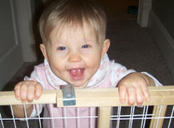

A good, solid baby safety gate is an absolute must in every home, regardless of whether or not you
have stairs. Every home has an area that's "off-limits".
Use these guidelines to find the perfect baby gate for your home.
The first thing you should assess when shopping for a baby safety gate is the space between the slats. They should never be
wide enough to allow your baby to stick her head through and get trapped. Many babies have died in such entrapments.
If you have stairs, the gates should be installed at the top and bottom of the staircase.

{My Elena's giggles}
Baby Safety Gates for Doorways
There are all types of baby gates available for doorways. Whichever style you choose, try to pick one that will
open for you instead of having step precariously over it.
Not having to take it up and put it down every time you pass will help ensure the gate is
actually used, and not just propped against the wall because you're too busy to keep reinstalling it.
If you've chosen an accordion-style gate, take extra care to ensure that the latice-design is not larget enough
for your infant's head to poke through. If the diamond cut-outs are larger than two inches, you'll need to purchase a new gate.
Go Touch-Free
This gate by First Years
makes it even easier for you to use by being touch free.
A handy foot pedal allows you to open the door
from both directions.
Surprisingly, the foot pedal is designed only for the weight of an adult, so an adventurous toddler
will still be kept inside. I highly recommend this gate, it is consistently the favorite for families with young children.
Although it isn't touch-free, it's easily operated with one hand. If
you're looking for good style and the one-hand option doesn't bother you, choose this baby safety gate.
Baby Safety Gates Designed for Irregular Areas
If you have an irregular-shaped area you wish to block off, these baby gates are what you're looking for. They're perfect for...
fireplaces
outdoor grilling area
woodburning stoves
the bottom of open staircases
a contained play area inside or out
The Configure Baby Safety Gate
The Configure Gate
is designed to be maneuvered in any position you need, yet still be anchored to the wall.
This gate has been used to surround the area in front of a TV, to close off a section of the
kitchen, to block the downstairs portion of a staircase, and in other useful spots.
The initial gate will cover an area of about 6 feet (72 inches). If that's not long enough, you can always purchase
8-inch extensions
or
24-inch extensions
until you get the length you need.
I could find only two negatives to using this gate.. First, there is a bar at the bottom of the door that can easily stub toes.
And second, babies who are mechanically-minded may easily pick up how to open it. You may want to consider those
two factors when determining if this gate is right for you.
The Hearthgate Baby Safety Gate
If you're looking for a gate that will stand on it's own, and doesn't require a hardware mounting to be sturdy (although
you can if you wish) the Hearthgate
by KidCo
may be exactly what you're looking for. It will wrap around a fireplace, outdoor grill, or attach to itself for a
circular contained play area.
Because it's made of a strong metal material, it won't melt or warp when placed in front of a hot area like a woodburning
stove or fireplace nor will it burn little fingers when touched. A single swinging door provides easy
access in and out, without having to awkwardly swing your legs over
(always an annoyance for shorter people like me). This model comes in a wrought-iron finish that's attractive enough to leave up year-round.
The gate is about 10 feet (120 inches) whens stretched out. Sections can be added to extend the size
(in 8-inch extensions
or 24-inch extensions), or taken
away to reduce it.
Although nearly everyone I researched seemed to highly value this gate, it is rather expensive.
All these baby gates are high-quality and sure to last you a long time. Although it may be tempting to drop $20 at Target on
a flimsy baby gate, I don't recommend it.
Pay for quality and get a baby safety gate that will keep your infant safe for as long as possible.